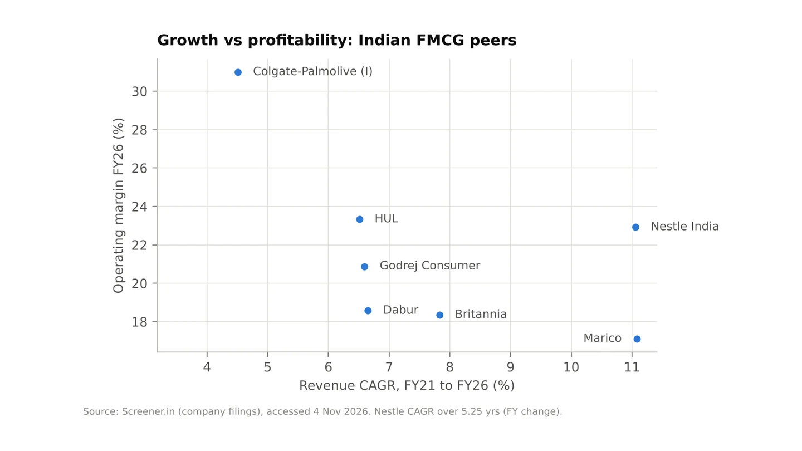

Business Analytics Business Analytics · Financial Analytics
Financial Analytics of Indian FMCG Companies




Benchmarks how seven Indian FMCG companies perform and gives management a disciplined way to judge a ₹600 crore plant. Every number lives in Excel formulas, one-off items are normalized, and the plant decision carries a sourced cost of capital and a probability of loss.
- +41% → −5%HUL’s FY26 profit growth once a one-off ₹4,611 crore demerger gain is removed
- ₹217 Crplant NPV at an 11% hurdle (IRR 18.2%); ₹150 crore expected after simulation
- 5.6%chance the plant loses money, from 20,000 simulated NPVs
Approach
Management needs a consistent view of how peers perform, and a disciplined way to judge a capital project: a ₹600 crore plant.
- Data. Twelve years (FY2015–FY2026) of profit and loss, balance sheet, cash flow and ratio data for seven listed FMCG companies, including HUL, Nestlé India and Britannia, reshaped into one 2,990-row long table.
- Method. A peer benchmark (growth, margins, ROE, ROCE, cash conversion cycle) built with SUMIFS over the long table, with DuPont analysis and one-off items normalized; a ten-year plant model with NPV, IRR and PMT; then a z-score scorecard, a Monte Carlo simulation (RAND with NORM.INV) and a CAPM cost of capital from published inputs.
- Result. HUL’s reported FY26 profit growth of +41% becomes about −5% once a one-off ₹4,611 crore demerger gain is removed. The plant’s NPV is ₹217 crore (IRR 18.2%) at an 11% hurdle, which sits inside the 10.7–12.0% CAPM range; simulation lowers the expected NPV to ₹150 crore, with a 5.6% chance of a loss.
- Recommendation. Report adjusted earnings beside reported earnings whenever one-offs exceed 5% of profit before tax, benchmark peers on ROCE and cash conversion rather than growth alone, and approve the plant with a contingency and a review if its EBITDA margin is below 15% in year two.
From the Start
-
Version 1: benchmark and plant model 4 Nov 2026
A peer benchmark built with SUMIFS over a long table, DuPont analysis with one-off items normalized, and a ten-year plant model with NPV, IRR and PMT.
-
Continuation 4 Nov 2026
A composite z-score scorecard tested over 10,000 weightings, earnings-quality tests, and a Monte Carlo simulation of the plant.
-
Interview audit 11 Nov 2026
A CAPM cost of capital from published inputs, what the market pays for, and the plant’s capital cost checked against peers.
-
Workbook sheets 14 Nov 2026
The continuation and the audit added to the practice workbook as live-formula sheets.
Issues & Fixes
| Issue | How I dealt with it |
|---|---|
| Nestlé India changed its financial year, so one column covers fifteen months (sales +44%, then −17%). | Measured its growth over 5.25 years instead of reading the spike as growth. |
| HUL’s FY25 revenue is restated for the ice-cream demerger while FY24 is not, so FY25 appears to fall 1%. | Footnoted it: HUL reported about 2% underlying growth. |
| Godrej Consumer’s FY24 loss comes from a −₹2,209 crore exceptional entry. | Excluded it from trends, with a footnote rather than a silent correction. |
| “Where does your 11% discount rate come from?” | Built a CAPM range from published inputs: 10.7–12.0%, so 11% sits inside it, and the IRR clears all of it. |
Limitations
- Seven companies: ITC and Tata Consumer Products were left out because their business mix differs.
- The data come from a website; balance sheets balance and one-offs were checked against results coverage, but key lines are not reconciled to the annual reports.
Future Improvements
- Add ITC and Tata Consumer Products to the peer set.
- Reconcile key lines to the annual reports for a formal deliverable.
- Where profit runs ahead of cash, split the gap into receivables, inventory, payables, capitalized costs and provisions.